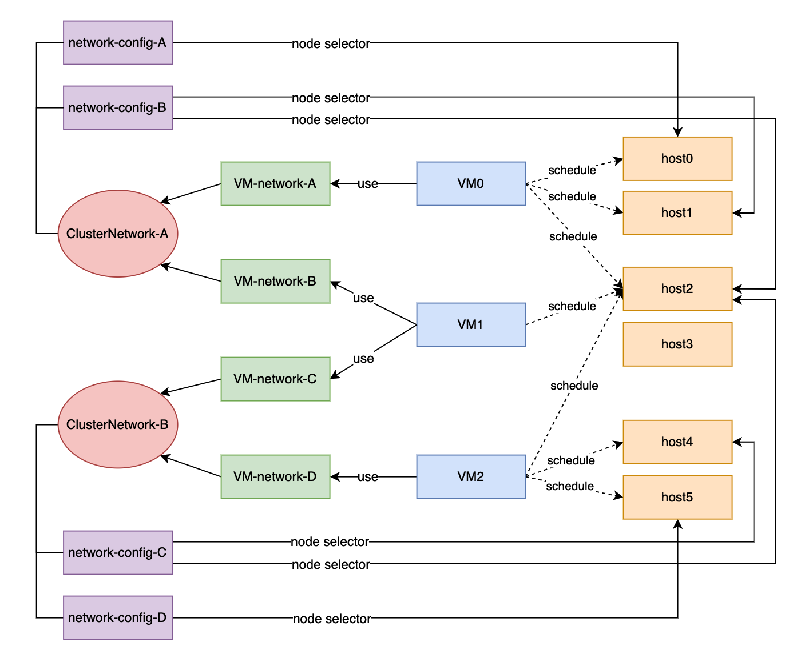
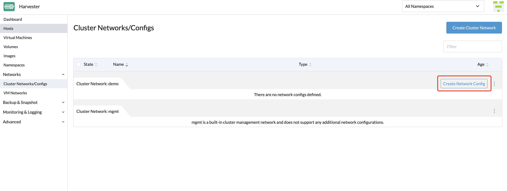

|
Este documento ha sido traducido utilizando tecnología de traducción automática. Si bien nos esforzamos por proporcionar traducciones precisas, no ofrecemos garantías sobre la integridad, precisión o confiabilidad del contenido traducido. En caso de discrepancia, la versión original en inglés prevalecerá y constituirá el texto autorizado. |
Red de clúster
conceptos
Red de clúster
El siguiente diagrama describe una arquitectura de red típica que separa el tráfico del centro de datos (DC) del tráfico fuera de banda (OOB).

Abstraemos la suma de dispositivos, enlaces y configuraciones en una ruta de reenvío aislada por tráfico en SUSE Virtualization como una red de clúster.
En el caso anterior, habrá dos redes de clúster correspondientes a dos rutas de reenvío aisladas por tráfico.
configuración de la red
Las especificaciones que incluyen dispositivos de red de los SUSE Virtualization hosts pueden ser diferentes. Para ser compatible con un clúster heterogéneo, diseñamos la configuración de red.
La configuración de red solo funciona bajo una cierta red de clúster. Cada configuración de red corresponde a un conjunto de hosts con especificaciones de red uniformes. Por lo tanto, se requieren múltiples configuraciones de red para una red de clúster en hosts no uniformes.
Red de VM
Una red de VM es una interfaz en una máquina virtual que se conecta a la red del host. Al igual que con una configuración de red, cada red excepto la red de gestión integrada debe estar bajo una red de clúster.
SUSE Virtualization admite la adición de múltiples redes a una VM. Si la red de clúster de una red no está habilitada en algunos hosts, la VM que posee esta red no será programada en esos hosts.
Por favor, consulta parte de red para más detalles sobre redes.
Relación entre Red de Clúster, Configuración de Red, Red de VM
El siguiente diagrama muestra la relación entre una red de clúster, una configuración de red y una red de VM.

Todos Network Configs y VM Networks están agrupados bajo una red de clúster.
-
Se puede asignar una etiqueta a cada host para categorizar los hosts según sus especificaciones de red.
-
Se puede añadir una configuración de red para cada grupo de hosts utilizando un selector de nodos.
Por ejemplo, en el diagrama anterior, los hosts en ClusterNetwork-A se dividen en tres grupos de la siguiente manera:
-
El primer grupo incluye host0, que corresponde a
network-config-A. -
El segundo grupo incluye host1 y host2, que corresponden a
network-config-B. -
El tercer grupo incluye los hosts restantes (host3, host4 y host5), que no tienen ninguna configuración de red relacionada y, por lo tanto, no pertenecen a
ClusterNetwork-A.
La red de clúster solo es efectiva en los hosts que están cubiertos por la configuración de red. Una VM que utiliza un VM network bajo una red de clúster específica solo puede ser programada en un host donde la red de clúster esté activa.
En el diagrama anterior, podemos ver que:
-
ClusterNetwork-Aestá activa en host0, host1 y host2.VM0utilizaVM-network-A, por lo que puede ser programada en cualquiera de estos hosts. -
VM1utiliza tantoVM-network-BcomoVM-network-C, por lo que solo puede ser programada en host2 donde tantoClusterNetwork-AcomoClusterNetwork-Bestán activos. -
VM0,VM1yVM2no pueden ejecutarse en host3 donde las dos redes de clúster están inactivas.
En general, este diagrama proporciona una visualización clara de la relación entre las redes de clúster, las configuraciones de red y las redes de VM, así como de cómo impactan en la programación de VM en los hosts.
Detalles de la red de clúster
Las redes de clúster son rutas de reenvío aisladas por tráfico para la transmisión de tráfico de red dentro de un SUSE Virtualization clúster.
Una red de clúster llamada mgmt se crea automáticamente cuando se despliega un SUSE Virtualization clúster. También puedes crear redes de clúster personalizadas que pueden estar dedicadas al tráfico de máquinas virtuales.
Red de clúster integrada
Cuando se despliega un SUSE Virtualization clúster, se crea automáticamente una red de clúster llamada mgmt para las comunicaciones intra-clúster. mgmt consiste en el mismo puente, vinculación y NICs que la red de infraestructura externa a la que cada SUSE Virtualization host se conecta con NICs de gestión. Debido a este diseño, mgmt también permite que las máquinas virtuales sean accesibles desde la red de infraestructura externa para fines de gestión de clústeres.
mgmt no requiere una configuración de red y está siempre habilitado en todos los hosts. No puedes deshabilitar y eliminar mgmt.
|
En SUSE Virtualization v1.5.x y versiones anteriores, todo el rango de ID de VLAN (2 a 4094) se asignaba a las interfaces de Para obtener más información, consulta issue #7650. |
A partir de v1.6.0, solo el ID de VLAN primario proporcionado durante la instalación se añade automáticamente al puente mgmt-br y a la interfaz mgmt-bo. Puedes añadir interfaces de VLAN secundarias después de que se complete la instalación.
Durante la instalación del primer nodo del clúster, puedes configurar el valor MTU para mgmt utilizando la configuración install.management_interface. El valor predeterminado del campo mtu es 1500, que es lo que mgmt utiliza típicamente. Sin embargo, si especificas un valor MTU diferente a 0 o 1500, debes añadir una anotación correspondiente después de que se despliegue el clúster.
|
Añadir interfaces de VLAN secundarias
-
Verifica la configuración actual de VLAN para los perfiles de conexión
bond-mgmtybridge-mgmt.Ejemplo (donde el ID de VLAN primario es 2017):
$ nmcli -f bridge-port.vlans con show bond-mgmt bridge-port.vlans: 1 pvid untagged, 2017 $ nmcli -f bridge.vlans con show bridge-mgmt bridge.vlans: 2017 -
Actualiza los perfiles de conexión
bond-mgmtybridge-mgmtpara añadir el ID de VLAN secundario.Ejemplo (donde el ID de VLAN primario es 2017 y el ID de VLAN secundario es 2018):
$ nmcli con modify bond-mgmt bridge-port.vlans '1 pvid untagged, 2017, 2018' $ nmcli con modify bridge-mgmt bridge.vlans 2017,2018 -
Reinicia cada nodo para aplicar el cambio.
Anota un valor MTU no predeterminado a mgmt después de la instalación.
Si especificaste un valor diferente a 0 o 1500 en el campo mtu de la configuración install.management_interface, debes anotar este valor al mgmt clusternetwork objeto. Sin la anotación, todas las redes de VM creadas utilizan el valor MTU predeterminado 1500 en lugar de heredar automáticamente el valor que especificaste.
Ejemplo
$ kubectl annotate clusternetwork mgmt network.harvesterhci.io/uplink-mtu="9000"
|
Debes asegurarte de lo siguiente:
|
Cambia el valor MTU de mgmt después de la instalación.
-
Detén todas las máquinas virtuales que están conectadas a la
mgmtred. -
(Opcional) Desactiva la red de almacenamiento si utiliza
mgmty está habilitada. -
Cambia el valor MTU para los perfiles de conexión
bond-mgmt,bridge-mgmtyvlan-mgmt(si estás utilizando una VLAN).Ejemplo:
$ nmcli con modify bond-mgmt 802-3-ethernet.mtu 9000 $ nmcli con modify bridge-mgmt 802-3-ethernet.mtu 9000 $ nmcli con modify vlan-mgmt 802-3-ethernet.mtu 9000 $ nmcli device reapply mgmt-bo $ nmcli device reapply mgmt-br -
Verifica los valores MTU utilizando el comando
ip link. -
Anota el
mgmtclusternetworkobjeto con el nuevo valor MTU.Ejemplo:
$ kubectl annotate clusternetwork mgmt network.harvesterhci.io/uplink-mtu="9000"Todas las redes de VM que están conectadas a
mgmtheredan automáticamente el nuevo valor MTU. -
(Opcional) Habilita la red de almacenamiento que desactivaste antes de cambiar el valor MTU.
-
Inicia todas las máquinas virtuales que están conectadas a
mgmt. -
Verifica que las cargas de trabajo de las máquinas virtuales estén funcionando normalmente.
Para obtener más información, consulte el [Change the MTU of a network configuration with an attached storage network].
Red de clúster personalizada
Si hay más de una interfaz de red conectada a cada host, puedes crear redes de clúster personalizadas para un mejor aislamiento del tráfico. Cada red de clúster debe tener al menos una configuración de red con un alcance definido y un modo de vinculación.
|
El witness node generalmente no está involucrado en la red de clúster personalizada. |
Configuración
Crear una nueva red de clúster
|
Para simplificar el mantenimiento del clúster, crea una configuración de red para cada nodo o grupo de nodos. Sin configuraciones de red dedicadas, ciertas tareas de mantenimiento (por ejemplo, reemplazar NICs antiguos por NICs en diferentes ranuras) requerirán que detengas y/o migres las máquinas virtuales afectadas antes de actualizar la configuración de red. |
-
Asegúrate de que se cumplen los requisitos de hardware.
-
Ve a Redes → ClusterNetworks/Configs, y luego haz clic en Crear.
-
Especifica un nombre para la red del clúster.

-
En la pantalla ClusterNetworks/Configs, haz clic en el botón Crear configuración de red de la red de clúster que creaste.

-
En la pantalla Configuración de red:Crear, especifica un nombre para la configuración.
-
En la pestaña Selector de nodos, selecciona el método para definir el alcance de esta configuración de red específica.

-
El método Seleccionar todos los nodos solo funciona cuando todos los nodos utilizan las mismas NICs dedicadas para esta red de clúster personalizada específica. En otras situaciones (por ejemplo, cuando el clúster tiene un nodo testigo), debes seleccionar cualquiera de los métodos restantes.
-
Si deseas que la configuración se aplique a nodos que no están cubiertos por el método seleccionado, debes crear otra configuración de red.
-
-
En la pestaña Uplink, configura los siguientes ajustes:
-
NICs: La lista contiene NICs que son comunes a todos los nodos seleccionados. Las NICs que no se pueden seleccionar no están disponibles en uno o más nodos y deben ser configuradas. Una vez completada la resolución de problemas, actualiza la pantalla y verifica que las NICs se puedan seleccionar.
-
Opciones de vinculación: El modo de vinculación predeterminado es
active-backup. -
Atributos: Debes usar el mismo MTU en todas las configuraciones de red de una red de clúster personalizada. Si no especificas un MTU, se utiliza el valor predeterminado
1500. El webhook SUSE Virtualization rechaza una nueva configuración de red si su MTU no coincide con el MTU de las configuraciones de red existentes.
Los switches físicos conectados a las interfaces de enlace deben configurarse como puertos trunk. Estos puertos deben aceptar tráfico etiquetado y enviar tráfico etiquetado con el ID de VLAN utilizado por la red de la VM.
-
-
Haz clic en Guardar.
Cambiar una configuración de red
Los cambios en las configuraciones de red existentes pueden afectar a SUSE Virtualization máquinas virtuales y cargas de trabajo, así como a dispositivos externos como switches y routers. Para más información, consulta Topología de red.
|
Debes detener todas las máquinas virtuales afectadas antes de cambiar una configuración de red. |
Las siguientes secciones describen los pasos que debes realizar para cambiar el MTU de una configuración de red. La red de clúster de muestra utilizada en estas secciones tiene cn-data que fue construida con un valor de MTU de 1500 y se pretende cambiar a 9000.

Cambios generales
-
Localiza la red del clúster objetivo y la configuración de red.
En el siguiente ejemplo, la red del clúster es
cn-datay la configuración de red esnc-1.
-
Selecciona ⋮ → Editar Config, y luego cambia los campos relevantes.
-
Pestaña Selector de nodos:

-
Pestaña Uplink:

Debes usar los mismos valores para los campos Opciones de vinculación y Atributos en todas las configuraciones de red de una red de clúster personalizada.
-
-
Haz clic en Guardar.
Cambia el MTU de una configuración de red sin red de almacenamiento adjunta
En este escenario, la configuración de red de almacenamiento no está habilitada ni adjunta a la red del clúster objetivo.
|
Si debes cambiar el MTU, realiza los siguientes pasos:
-
Detén todas las máquinas virtuales que están adjuntas a la red del clúster objetivo.
Puedes comprobar esto utilizando la red de máquina virtual y cualquier red secundaria que puedas haber utilizado. No cambies el MTU mientras cualquiera de las máquinas virtuales conectadas siga en funcionamiento.
-
Revisa las configuraciones de red de la red del clúster objetivo.
Si existen múltiples configuraciones de red, registra el selector de nodo para cada una y elimina configuraciones hasta que solo quede una.
-
Cambia el MTU de la configuración de red restante.
También debes cambiar el MTU en el conmutador o router externo.
-
Verifica que el MTU se haya cambiado utilizando el comando de Linux
ip link.Si la configuración de red selecciona múltiples nodos SUSE Virtualization, ejecuta el comando en cada nodo.
La salida debe mostrar el nuevo MTU del dispositivo
*-brrelacionado y el estadoUP. En el siguiente ejemplo, el dispositivo escn-data-bry el nuevo MTU es9000.Harvester node $ ip link show dev cn-data-br |new MTU| |state UP| 3: cn-data-br: <BROADCAST,MULTICAST,UP,LOWER_UP> mtu 9000 qdisc noqueue state UP mode DEFAULT group default qlen 1000 link/ether 52:54:00:6e:5c:2a brd ff:ff:ff:ff:ff:ffCuando el estado es
UNKNOWN, es probable que los valores de MTU en SUSE Virtualization y el conmutador o router externo no coincidan. -
Prueba el nuevo MTU en los nodos SUSE Virtualization utilizando comandos como
ping.Debes enviar los mensajes a un nodo SUSE Virtualization con el nuevo MTU o a un nodo con una IP externa.
En el siguiente ejemplo, la red es
cn-data, el CIDR es192.168.100.0/24y el gateway es192.168.100.1.-
Establece la IP
192.168.100.100en el dispositivo puente.$ ip addr add dev cn-data-br 192.168.100.100/24 -
Añade una ruta para la IP de destino (por ejemplo,
8.8.8.8) a través del gateway.$ ip route add 8.8.8.8 via 192.168.100.1 dev cn-data-br -
Haz ping a la IP de destino desde la nueva IP
192.168.100.100.$ ping 8.8.8.8 -I 192.168.100.100 PING 8.8.8.8 (8.8.8.8) from 192.168.100.100 : 56(84) bytes of data. 64 bytes from 8.8.8.8: icmp_seq=1 ttl=59 time=8.52 ms 64 bytes from 8.8.8.8: icmp_seq=2 ttl=59 time=8.90 ms ... -
Haz ping a la IP de destino con un tamaño de paquete diferente para validar el nuevo MTU.
$ ping 8.8.8.8 -s 8800 -I 192.168.100.100 PING 8.8.8.8 (8.8.8.8) from 192.168.100.100 : 8800(8828) bytes of data The param `-s` specify the ping packet size, which can test if the new MTU really works -
Elimina la ruta que usaste para las pruebas.
$ ip route delete 8.8.8.8 via 192.168.100.1 dev cn-data-br -
Elimina la IP que usaste para las pruebas.
$ ip addr delete 192.168.100.100/24 dev cn-data-br
-
-
Vuelve a añadir las configuraciones de red que eliminaste.
Debes cambiar el MTU en cada configuración de red y verificar que se haya aplicado el nuevo MTU. El webhook SUSE Virtualization rechaza una nueva configuración de red si su MTU no coincide con el MTU de las configuraciones de red existentes.
Todas las redes de máquinas virtuales que están conectadas a la red del clúster de destino heredan automáticamente el nuevo valor de MTU.
En el siguiente ejemplo, el nombre de la red es vm100. Ejecuta el comando kubectl get NetworkAttachmentDefinition.k8s.cni.cncf.io vm100 -oyaml para verificar que el valor de MTU se ha actualizado:
+
apiVersion: k8s.cni.cncf.io/v1
kind: NetworkAttachmentDefinition
metadata:
annotations:
network.harvesterhci.io/route: '{"mode":"auto","serverIPAddr":"","cidr":"","gateway":""}'
creationTimestamp: '2025-04-25T10:21:01Z'
finalizers:
- wrangler.cattle.io/harvester-network-nad-controller
- wrangler.cattle.io/harvester-network-manager-nad-controller
generation: 1
labels:
network.harvesterhci.io/clusternetwork: cn-data
network.harvesterhci.io/ready: 'true'
network.harvesterhci.io/type: L2VlanNetwork
network.harvesterhci.io/vlan-id: '100'
name: vm100
namespace: default
resourceVersion: '1525839'
uid: 8dacf415-ce90-414a-a11b-48f041d46b42
spec:
config: >-
{"cniVersion":"0.3.1","name":"vm100","type":"bridge","bridge":"cn-data-br","promiscMode":true,"vlan":100,"ipam":{},"mtu":9000} // MTU has been updated-
Inicia todas las máquinas virtuales que están conectadas a la red del clúster de destino.
Las máquinas virtuales deberían haber heredado el nuevo MTU. Puedes verificar esto en el sistema operativo invitado utilizando los comandos
ip linkyping 8.8.8.8 -s 8800. -
Verifica que las cargas de trabajo de las máquinas virtuales estén funcionando normalmente.
|
SUSE Virtualization no puede ser responsable de ningún daño o pérdida de datos que pueda ocurrir cuando se cambie el valor de MTU. |
Cambia el MTU de una configuración de red con una red de almacenamiento adjunta.
En este escenario, la configuración de red de almacenamiento está habilitada y conectada a la red del clúster de destino.
La red de almacenamiento es utilizada por driver.longhorn.io, que es el controlador CSI predeterminado de SUSE Virtualization. SUSE Storage es responsable de aprovisionar volúmenes raíz, por lo que cambiar el MTU afecta a todas las máquinas virtuales.
|
Si debes cambiar el MTU, realiza los siguientes pasos:
-
Detén todas las máquinas virtuales.
-
Desactiva la configuración de red de almacenamiento.
Permite un tiempo para que la configuración se desactive, y luego verifica que el cambio se haya aplicado.
-
Revisa las configuraciones de red de la red del clúster objetivo.
Si existen múltiples configuraciones de red, registra el selector de nodo para cada una y elimina configuraciones hasta que solo quede una.
-
Cambia el MTU de la configuración de red restante.
También debes cambiar el MTU en el conmutador o router externo.
-
Verifica que el MTU se haya cambiado utilizando el comando
ip link.Si la configuración de red selecciona múltiples nodos SUSE Virtualization, ejecuta el comando en cada nodo.
La salida debe mostrar el nuevo MTU del dispositivo
*-brrelacionado y el estadoUP. En el siguiente ejemplo, el dispositivo escn-data-bry el nuevo MTU es9000.Harvester node $ ip link show dev cn-data-br |new MTU| |state UP| 3: cn-data-br: <BROADCAST,MULTICAST,UP,LOWER_UP> mtu 9000 qdisc noqueue state UP mode DEFAULT group default qlen 1000 link/ether 52:54:00:6e:5c:2a brd ff:ff:ff:ff:ff:ffCuando el estado es
UNKNOWN, es probable que los valores de MTU en SUSE Virtualization y el conmutador o router externo no coincidan. -
Prueba el nuevo MTU en nodos SUSE Virtualization utilizando comandos como
ping.Debes enviar los mensajes a un nodo SUSE Virtualization con el nuevo MTU o a un nodo con una IP externa.
En el siguiente ejemplo, la red es
cn-data, el CIDR es192.168.100.0/24y el gateway es192.168.100.1.-
Establece la IP
192.168.100.100en el dispositivo puente.$ ip addr add dev cn-data-br 192.168.100.100/24 -
Añade una ruta para la IP de destino (por ejemplo,
8.8.8.8) a través del gateway.$ ip route add 8.8.8.8 via 192.168.100.1 dev cn-data-br -
Haz ping a la IP de destino desde la nueva IP
192.168.100.100.$ ping 8.8.8.8 -I 192.168.100.100 PING 8.8.8.8 (8.8.8.8) from 192.168.100.100 : 56(84) bytes of data. 64 bytes from 8.8.8.8: icmp_seq=1 ttl=59 time=8.52 ms 64 bytes from 8.8.8.8: icmp_seq=2 ttl=59 time=8.90 ms ... -
Haz ping a la IP de destino con un tamaño de paquete diferente para validar el nuevo MTU.
$ ping 8.8.8.8 -s 8800 -I 192.168.100.100 PING 8.8.8.8 (8.8.8.8) from 192.168.100.100 : 8800(8828) bytes of data The param `-s` specify the ping packet size, which can test if the new MTU really works -
Elimina la ruta que utilizaste para las pruebas.
$ ip route delete 8.8.8.8 via 192.168.100.1 dev cn-data-br -
Elimina la IP que utilizaste para las pruebas.
$ ip addr delete 192.168.100.100/24 dev cn-data-br
-
-
Vuelve a añadir las configuraciones de red que eliminaste.
Debes cambiar el MTU en cada configuración de red y verificar que se haya aplicado el nuevo MTU. El webhook SUSE Virtualization rechaza una nueva configuración de red si su MTU no coincide con el MTU de las configuraciones de red existentes.
-
Habilita y configura la configuración de red de almacenamiento, asegurándote de que se cumplan los requisitos previos.
-
Permite un tiempo para que la configuración se habilite, y luego verifica que el cambio se haya aplicado. El
storagenetworkfunciona con el nuevo valor de MTU.
Todas las redes VM que están adjuntas a la red del clúster de destino heredan automáticamente el nuevo valor de MTU.
+
En el siguiente ejemplo, el nombre de la red es vm100. Ejecuta el comando kubectl get NetworkAttachmentDefinition.k8s.cni.cncf.io vm100 -oyaml para verificar que el valor de MTU se ha actualizado.
+
apiVersion: k8s.cni.cncf.io/v1
kind: NetworkAttachmentDefinition +
metadata: +
annotations: +
network.harvesterhci.io/route: '{"mode":"auto","serverIPAddr":"","cidr":"","gateway":""}' +
creationTimestamp: '2025-04-25T10:21:01Z' +
finalizers: +
- wrangler.cattle.io/harvester-network-nad-controller +
- wrangler.cattle.io/harvester-network-manager-nad-controller +
generation: 1 +
labels: +
network.harvesterhci.io/clusternetwork: cn-data +
network.harvesterhci.io/ready: 'true' +
network.harvesterhci.io/type: L2VlanNetwork
network.harvesterhci.io/vlan-id: '100' +
name: vm100 +
namespace: default +
resourceVersion: '1525839' +
uid: 8dacf415-ce90-414a-a11b-48f041d46b42 +
spec: +
config: >- +
{"cniVersion":"0.3.1","name":"vm100","type":"bridge","bridge":"cn-data-br","promiscMode":true,"vlan":100,"ipam":{},"mtu":9000} // MTU ha sido actualizado
-
Inicia todas las máquinas virtuales que están adjuntas a la red del clúster de destino.
Las máquinas virtuales deberían haber heredado el nuevo MTU. Puedes verificar esto en el sistema operativo invitado utilizando el comando Linux
ip linky el comandoping 8.8.8.8 -s 8800. -
Verifica que las cargas de trabajo de las máquinas virtuales estén funcionando normalmente.
|
SUSE Virtualization no puede ser responsable de ningún daño o pérdida de datos que pueda ocurrir cuando se cambie el valor de MTU. |